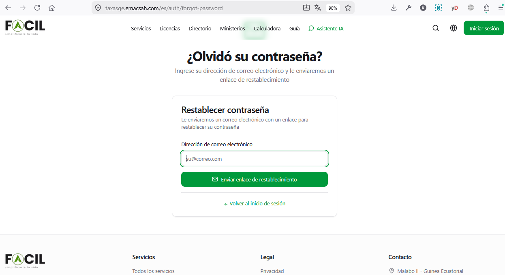
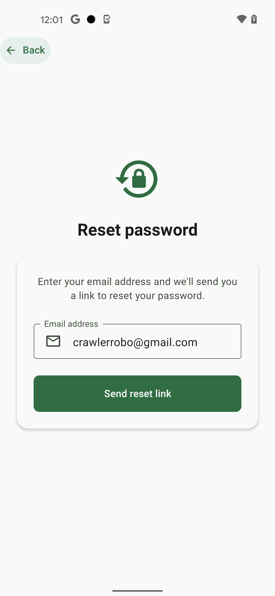
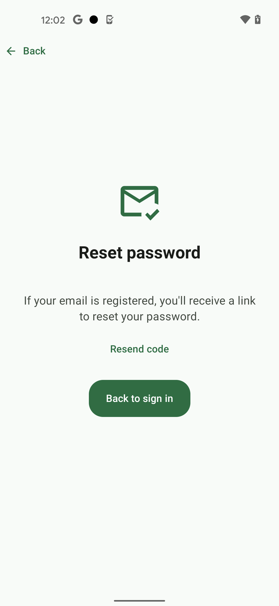

Recuperar su contraseña
Si ha olvidado su contraseña, no necesita crear una nueva cuenta. El procedimiento de recuperación restablece su acceso en menos de 5 minutos vía un enlace seguro enviado a su email.
1. Solicitar el enlace de recuperación
- Vaya a la pantalla de inicio de sesión.
- Pulse el enlace «¿Contraseña olvidada?» situado bajo el campo contraseña.
- Introduzca el email asociado a su cuenta. Use exactamente el mismo email con el que se registró (sensible a mayúsculas).
- Pulse «Enviar el enlace».
- Aparece un mensaje de confirmación: «Si una cuenta existe con este email, recibirá un enlace en pocos minutos». Por seguridad, el sistema no revela si el email está realmente registrado o no.
Versión Web — «¿Olvidó su contraseña?»
En la versión Web, la URL directa es https://taxasge.emacsah.com/es/auth/forgot-password. La pantalla muestra el título «¿Olvidó su contraseña?» con la tarjeta «Restablecer contraseña», un campo email + botón «Enviar enlace de restablecimiento», y un enlace «← Volver al inicio de sesión».

taxasge.emacsah.com/es/auth/forgot-password) — header con menú de navegación, tarjeta central con campo email + botón verde «Enviar enlace de restablecimiento» + enlace «Volver al inicio de sesión».Versión Móvil — «Reset password»
En la aplicación móvil, una pantalla simple presenta el icono de cadena con flecha de actualización, el título «Reset password», una breve explicación, el campo email + botón verde «Send reset link». Botón «← Back» arriba a la izquierda para regresar al login.

2. Flujo completo (diagrama)
┌─────────────────┐ ┌──────────────────┐
│ USUARIO │ │ FRONTEND FACIL │
│ Olvidó MDP ├───────►│ /forgot-password│
└─────────────────┘ └────────┬─────────┘
│ POST {email}
▼
┌─────────────────────┐
│ BACKEND │
│ 1. Verifica email │
│ en BD │
│ 2. Genera token │
│ (24h validez) │
│ 3. Envía email │
│ con enlace │
└─────────┬───────────┘
│
▼
┌─────────────────────┐
│ EMAIL ENVIADO │
│ asunto: Recupere su│
│ contraseña Facil │
│ link: /reset/{token}│
└─────────┬───────────┘
│
Usuario abre │ enlace
▼
┌─────────────────────┐
│ /reset/{token} │
│ Form: nueva contraseña │
│ Form: confirmación │
└─────────┬───────────┘
│ POST {token, nueva}
▼
┌─────────────────────┐
│ BACKEND │
│ 1. Verifica token │
│ válido + no usado│
│ 2. Aplica reglas │
│ contraseña │
│ 3. Hash + guarda │
│ bcrypt 12 rounds │
│ 4. Invalida token │
│ 5. Cierra sesiones │
│ activas │
└─────────┬───────────┘
│
▼
┌─────────────────────┐
│ ✅ Acceso restaurado│
│ Email confirmación │
│ enviado │
└─────────────────────┘3. Recibir y abrir el email
El email arriba en su buzón en menos de 2 minutos. Características:
- Remitente :
noreply@taxasge.emacsah.com - Asunto : «Recupere su contraseña Facil»
- Enlace de un solo uso, válido durante 24 horas
- Información de seguridad : IP del solicitante + navegador (para detectar abusos)
Pantalla de confirmación móvil
Tras pulsar «Send reset link» en móvil, una pantalla de confirmación aparece con icono email validado, título «Reset password», mensaje «If your email is registered, you'll receive a link to reset your password», un enlace «Resend code» (reutilizable después de 30 segundos) y un botón «Back to sign in».

4. Definir una nueva contraseña
- Pulse el enlace en el email — abre la página
/reset/{token}en su navegador. - Introduzca su nueva contraseña (mismas reglas que en creación de cuenta: mín. 8 caracteres, mayúscula, cifra).
- Confírmela en el segundo campo.
- Pulse «Guardar la nueva contraseña».
- Será redirigido automáticamente a la pantalla de inicio de sesión. Conéctese con su nueva contraseña.
5. Notas de seguridad
- Cierre automático de sesiones: al cambiar la contraseña, todas sus sesiones activas se cierran automáticamente (todos los dispositivos donde estaba conectado). Deberá conectarse de nuevo en cada uno.
- Email de confirmación: recibirá un email confirmando el cambio. Si no es usted quien lo ha hecho, contacte al soporte y bloquee su cuenta inmediatamente.
- Token de un solo uso: el enlace recibido por email no puede ser reutilizado. Una vez cambiada la contraseña, el enlace queda inválido.
- Caducidad 24h: si no usa el enlace en las 24 horas, expira. Solicite uno nuevo.
6. Si ya no tiene acceso al email registrado
El procedimiento estándar requiere acceso al email. Si lo ha perdido (cuenta cerrada, email del trabajo desactivado, etc.), contacte directamente al soporte Facil:
- Envíe un email a
facilege26@gmail.comcon el asunto «Recuperación de cuenta - email perdido». - Adjunte una copia de su DIP/NIE (foto clara, frente y dorso).
- Indique su nuevo email al que desea asociar la cuenta.
- El equipo de soporte verifica su identidad y le contesta en 48-72 horas hábiles.